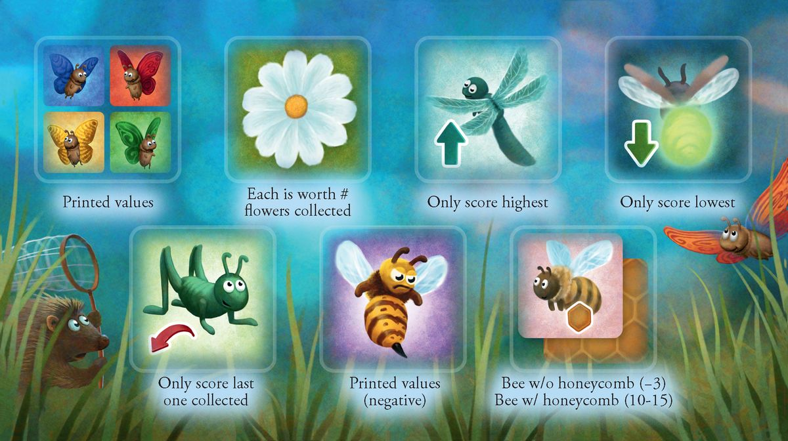

Butterfly
Board Game Arena 官方规则文档
Butterfly is simple tile set collection game by Rio Grande. You take the hedgehog from tile to tile scoring points for the tiles you collect.
Gameplay
SETUP:
Tiles are randomly arranged in a grid so that every game is different.
The player to the left of the starting player places the hedgehog on any tile but doesn't add that tile to their collection.
TURN:
Players then take turns:
~ Move the hedgehog as many spaces as you like to its LEFT, RIGHT OR FORWARD. It may never be moved backward!
~ Then take the tile you moved to and immediately receive its points.
You can skip over empty spaces to reach a tile.
If the hedgehog moves over a net, you may press your luck by drawing and scoring a random tile from the bag.
Scoring

BUTTERFLIES = score the points printed on the tile.
- ~ There are x2 butterfly point multipliers in each colour, which may or may not be on the board.
DRAGONFLIES = score only the highest value dragonfly collected.
LIGHTNING BUGS = score only the lowest value lightning bug collected.
GRASSHOPPERS = score only the last grasshopper collected. Previous tiles are immediately discarded during play.
FLOWERS = are each worth the number of collected flowers.
- ~ Example: if you have 4 flowers, each flower is worth 4 points = a total of 16 points in flowers.
BEES paired with a Honeycomb = the value printed on the honeycomb.
- ~Bees are worth -3 without a Honeycomb to live in!
HONEYCOMBS = 0 points without a bee to live in them.
WASPS = negative points printed on each wasp tile.
End Game
The game is over when the hedgehog can no longer be moved. The player with the highest score at that time wins!